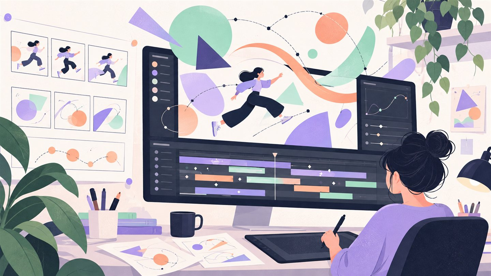

CREATIVE PORTFOLIO
Motion Graphics & Video EditingPortfolio.
Animation direction, motion design, and video editing.
8 projects · 8 videosProject previews & films
Selected work
View all 69 projects ↗ 2D ANIMATION
2D ANIMATION01 / 2D ANIMATION
Protect Your Home from Pests ↗
Educational animation for pest awareness campaign.
View project → 2D ANIMATION
2D ANIMATION02 / 2D ANIMATION
Family Pest Safety ↗
Character animation explaining home protection.
View project → 2D ANIMATION
2D ANIMATION03 / 2D ANIMATION
Waste Collection Guide ↗
Municipality awareness — proper waste disposal.
View project → 2D ANIMATION
2D ANIMATION04 / 2D ANIMATION
Old Furniture Disposal ↗
Tadweer-style explainer on bulky waste handling.
View project → 2D ANIMATION
2D ANIMATION05 / 2D ANIMATION
Chemical Safety ↗
Workplace safety procedures animation.
View project → 2D ANIMATION
2D ANIMATION06 / 2D ANIMATION
Safe Pesticide Handling ↗
Informative animation for proper pesticide use.
View project → 2D ANIMATION
2D ANIMATION07 / 2D ANIMATION
Ants Everywhere ↗
Playful character-driven pest education.
View project → 2D ANIMATION
2D ANIMATION08 / 2D ANIMATION
Farm Pest Control ↗
Agricultural safety & pest management story.
View project →Motion studies
8 videosEight motion graphics compositions. Select any video to watch it here.

02 / F-A.mp4
Open original video ↗03 / F.A.mp4
Open original video ↗04 / FA.mp4
Open original video ↗05 / Final ArtworkS.mp4
Open original video ↗06 / Final Composition.mp4
Open original video ↗07 / Pre-comp 2.mp4
Open original video ↗08 / PV.mp4
Open original video ↗LET’S CREATE SOMETHING
Have a project in mind?
Share your idea, scope, and timeline for a custom quote.